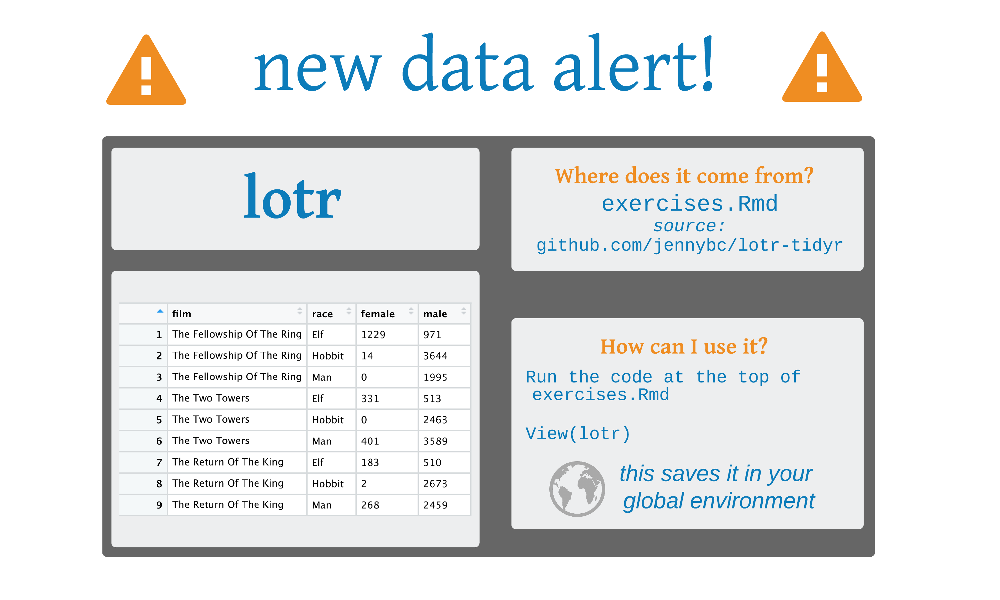
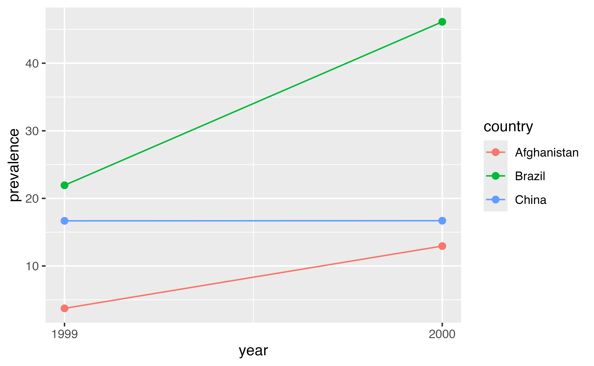
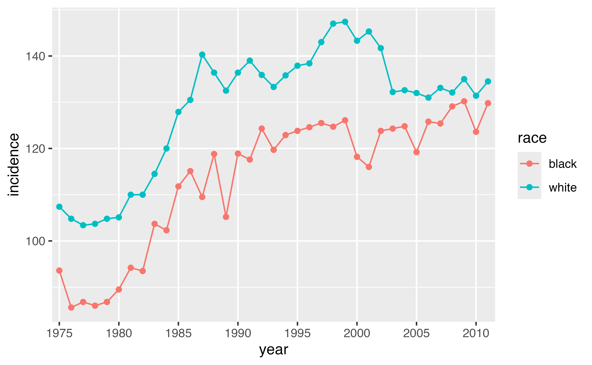

Tidying Data
tidyr
2025-08-09
tidyr

Functions for tidying data.
What is tidy data?
“Tidy datasets are all alike, but every messy dataset is messy in its own way.” — Hadley Wickham
Tidy Data

Each column is a single variable
Each row is a single observation
Each cell is a value
pivot_longer()
Lord of the Rings
lotr <- tribble(
~film, ~race, ~female, ~male,
"The Fellowship Of The Ring", "Elf", 1229L, 971L,
"The Fellowship Of The Ring", "Hobbit", 14L, 3644L,
"The Fellowship Of The Ring", "Man", 0L, 1995L,
"The Two Towers", "Elf", 331L, 513L,
"The Two Towers", "Hobbit", 0L, 2463L,
"The Two Towers", "Man", 401L, 3589L,
"The Return Of The King", "Elf", 183L, 510L,
"The Return Of The King", "Hobbit", 2L, 2673L,
"The Return Of The King", "Man", 268L, 2459L
)Lord of the Rings
# A tibble: 9 × 4
film race female male
<chr> <chr> <int> <int>
1 The Fellowship Of The Ring Elf 1229 971
2 The Fellowship Of The Ring Hobbit 14 3644
3 The Fellowship Of The Ring Man 0 1995
4 The Two Towers Elf 331 513
5 The Two Towers Hobbit 0 2463
6 The Two Towers Man 401 3589
7 The Return Of The King Elf 183 510
8 The Return Of The King Hobbit 2 2673
9 The Return Of The King Man 268 2459
pivot_longer()
pivot_longer()
# A tibble: 18 × 4
film race sex words
<chr> <chr> <chr> <int>
1 The Fellowship Of The Ring Elf female 1229
2 The Fellowship Of The Ring Elf male 971
3 The Fellowship Of The Ring Hobbit female 14
4 The Fellowship Of The Ring Hobbit male 3644
5 The Fellowship Of The Ring Man female 0
6 The Fellowship Of The Ring Man male 1995
7 The Two Towers Elf female 331
8 The Two Towers Elf male 513
9 The Two Towers Hobbit female 0
10 The Two Towers Hobbit male 2463
11 The Two Towers Man female 401
12 The Two Towers Man male 3589
13 The Return Of The King Elf female 183
14 The Return Of The King Elf male 510
15 The Return Of The King Hobbit female 2
16 The Return Of The King Hobbit male 2673
17 The Return Of The King Man female 268
18 The Return Of The King Man male 2459
Your Turn 1
Use pivot_longer() to reorganize table4a into three columns: country, year, and cases.
Your Turn 1
pivot_wider()

Animation by Mara Averick
pivot_wider()
# A tibble: 6 × 5
film sex Elf Hobbit Man
<chr> <chr> <int> <int> <int>
1 The Fellowship Of The Ring female 1229 14 0
2 The Fellowship Of The Ring male 971 3644 1995
3 The Two Towers female 331 0 401
4 The Two Towers male 513 2463 3589
5 The Return Of The King female 183 2 268
6 The Return Of The King male 510 2673 2459Your Turn 2
Use pivot_wider() to reorganize table2 into four columns: country, year, cases, and population.
Create a new variable called prevalence that divides cases by population multiplied by 100000.
Pass the data frame to a ggplot. Make a scatter plot with year on the x axis and prevalence on the y axis. Set the color aesthetic (aes()) to country. Use size = 2 for the points. Add a line geom.
Your Turn 2
table2 |>
pivot_wider(
names_from = type,
values_from = count
) |>
mutate(prevalence = (cases / population) * 100000)# A tibble: 6 × 5
country year cases population prevalence
<chr> <dbl> <dbl> <dbl> <dbl>
1 Afghanistan 1999 745 19987071 3.73
2 Afghanistan 2000 2666 20595360 12.9
3 Brazil 1999 37737 172006362 21.9
4 Brazil 2000 80488 174504898 46.1
5 China 1999 212258 1272915272 16.7
6 China 2000 213766 1280428583 16.7 Your Turn 2
Your Turn 2

Your Turn 3
Pivot the 5th through 60th columns of who so that the names of the columns go into a new variable called codes and the values go into a new variable called n. Then select just the country, year, codes and n variables.
Your Turn 3
Your Turn 3
# A tibble: 405,440 × 4
country year codes n
<chr> <dbl> <chr> <dbl>
1 Afghanistan 1980 new_sp_m014 NA
2 Afghanistan 1980 new_sp_m1524 NA
3 Afghanistan 1980 new_sp_m2534 NA
4 Afghanistan 1980 new_sp_m3544 NA
5 Afghanistan 1980 new_sp_m4554 NA
6 Afghanistan 1980 new_sp_m5564 NA
7 Afghanistan 1980 new_sp_m65 NA
8 Afghanistan 1980 new_sp_f014 NA
9 Afghanistan 1980 new_sp_f1524 NA
10 Afghanistan 1980 new_sp_f2534 NA
# ℹ 405,430 more rowsseparate()/unite()
Your Turn 4
Use the cases data below. Separate the sex_age column into sex and age columns.
Your Turn 4
# A tibble: 3 × 3
id sex age
<chr> <chr> <chr>
1 1 male 56
2 2 female 77
3 3 female 49 Your Turn 4
# A tibble: 3 × 3
id sex age
<chr> <chr> <int>
1 1 male 56
2 2 female 77
3 3 female 49Your Turn 5: Challenge!
There are two CSV files in this folder containing SEER data in breast cancer incidence in white and black women. For both sets of data:
Import the data
Pivot the columns into 2 new columns called year and incidence
Add a new variable called race. Remember that each data set corresponds to a single race.
Bind the data sets together using bind_rows() from the dplyr package. Either save it as a new object or pipe the result directly into the ggplot2 code.
Plot the data using the code below. Fill in the blanks to have year on the x-axis, incidence on the y-axis, and race as the color aesthetic.
Your Turn 5: No solution 😈
Other neat tidyr tools
Uncounting frequency tables
Other neat tidyr tools
# A tibble: 21,245 × 3
film race sex
<chr> <chr> <chr>
1 The Fellowship Of The Ring Elf female
2 The Fellowship Of The Ring Elf female
3 The Fellowship Of The Ring Elf female
4 The Fellowship Of The Ring Elf female
5 The Fellowship Of The Ring Elf female
6 The Fellowship Of The Ring Elf female
7 The Fellowship Of The Ring Elf female
8 The Fellowship Of The Ring Elf female
9 The Fellowship Of The Ring Elf female
10 The Fellowship Of The Ring Elf female
# ℹ 21,235 more rows